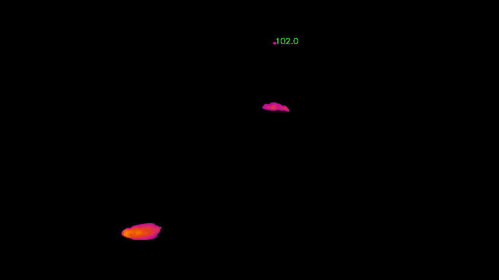
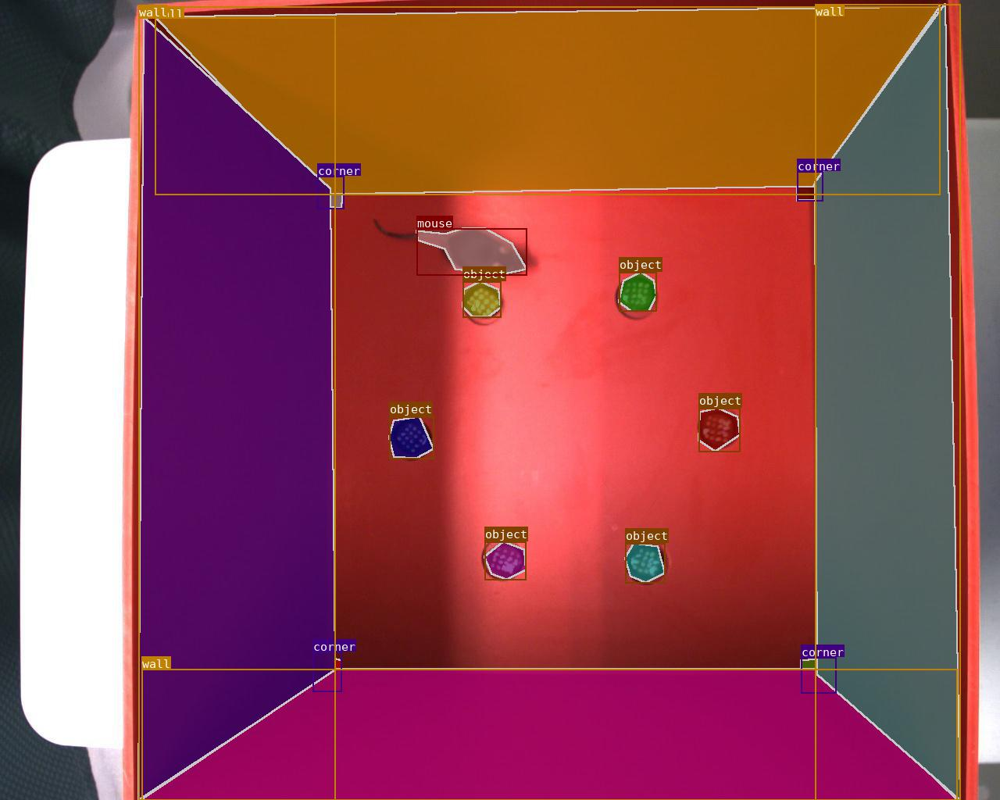
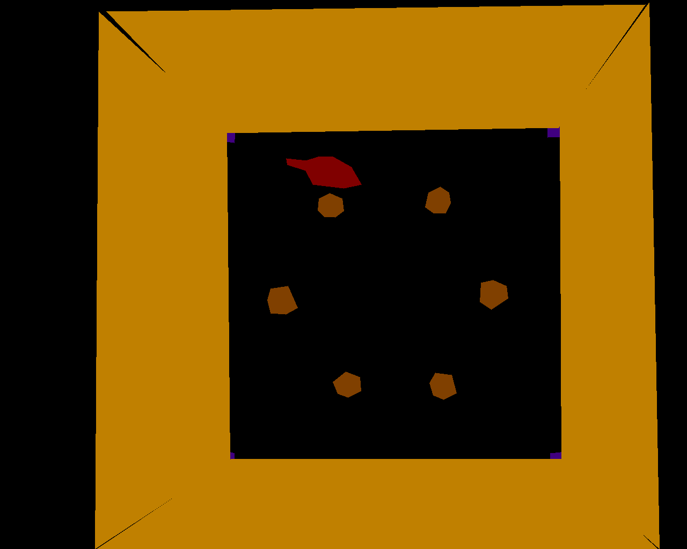
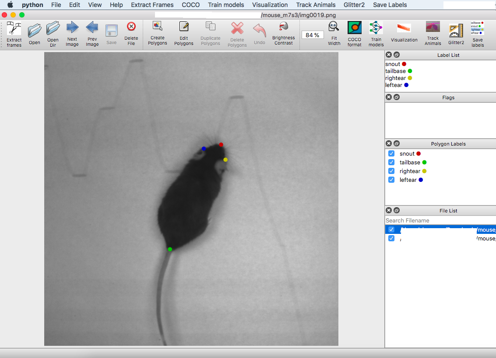

FAQs
Threshold based object segmenation
Added track bars for users to select HSV values to segment ROIs in the provided video.
python annolid/main.py -v /path/to/my_video.mp4 --segmentation=threshold

Convert WMV format to mp4 format using ffmpeg
ffmpeg -i /path/to/my_video.wmv -c:a aac /path/to/my_video.mp4
Save the extracted frames to a user selected output directory
If not selected, it will save the extracted frames to a folder named with the video name without extension. For example, if the input video path is /path/to/my_video.mp4, the extracted frames will be saved in the folder /path/to/my_video. The output directory is provided, the extracted frames will be saved /path/to/dest/my_video.
cd annolid
python main.py -v /path/to/my_video.mp4 --extract_frames=20 --to /path/to/dest --algo=uniform
How to track multiple objects in the video?
Currently, it just works for person class with pretrained YOLOV3 or YOLOV5 weights.
python annolid/main.py -v /path/to/my_video.mp4 --track=YOLOV5
How to convert coco annonation format to YOLOV5 format?
The dataset is structured as follows.
my_yolo_dataset
├── images
│ ├── train
│ └── val
└── labels
├── train
└── val
data.yaml
python main.py --coco2yolo=/path/to/my_coco_dataset/annotations.json --to my_yolo_dataset --dataset_type=val
How to train a custom YOLOV5 model?
cd annolid/detector
cp -r my_yolo_dataset annolid/detector
cd yolov5
# change nc (number of classes) in the models/yolo5x.yaml, default is 80
python train.py --img 640 --batch 8 --epochs 30 --data ../my_dataset_yolo/data.yaml --cfg ./models/yolov5x.yaml --weights yolov5x.pt --name yolov5x_my_model --cache
How to track objects in a video with the trained model?
cd annold
python main.py -v /path/to/my_video.mp4 --track=YOLOV5 --weights=detector/yolov5/runs/exp5_yolov5x_my_model/weights/best.pt
How to convert labelme labeled dataset to COCO format?
:warning: You might need to reinstall annolid because it requires labelme
and pycocotools now.
cd annold
python main.py --labelme2coco=/path/to/my_labeled_images --to /path/to/my_dataset_coco --labels=/path/to/my_labels.txt --vis=True
If vis is true, it will create an additional visualization folder. The dataset is structured as follows.
../../datasets/mydataset_coco/
├── data.yaml
├── train
│ ├── annotations.json
│ └── JPEGImages
│ ├── 00000444.jpg
└── valid
├── annotations.json
└── JPEGImages
├── 00000443.jpg

An example mask file

How to train a YOLACT model with a custom dataset?
Please create a dataset yaml file by using the annolid/segementation/yolact/configs/mouse_a4_dataset.yaml as an example.
cd annolild/segmentation/yolact
python train.py --config=configs/my_custom_dataset.yaml --batch_size=8
How to evaluate a video based on a trained model?
cd annolid/segmentation/yolact
python eval.py --trained_model=weights/yolact_plus_resnet50_xxx_xxx_xxx_interrupt.pth --score_threshold=0.2 --top_k=4 --video_multiframe=1 --video=my_video.avi:my_result_video.mp4 --mot --config=configs/my_custom_dataset.yaml
Note: the output tracking CSV file and video will be saved to the folder annolid/segmentation/results.
Convert the tracking results csv file to Glitter2 csv format
The result csv file named as tracking_results_nix.csv in the folder as provided in –to option.
python annolid/main.py -v /path/to/my_video.mkv --tracks2glitter /path/to/tracking_results.csv --to /path/to/results_dir/
Convert the keypoint annotations to labelme format
python annolid/main.py --keypoints2labelme /path/to/mouse_m7s3/ --keypoints /path/to/mouse_m7s3/CollectedData_xxxx.h5
